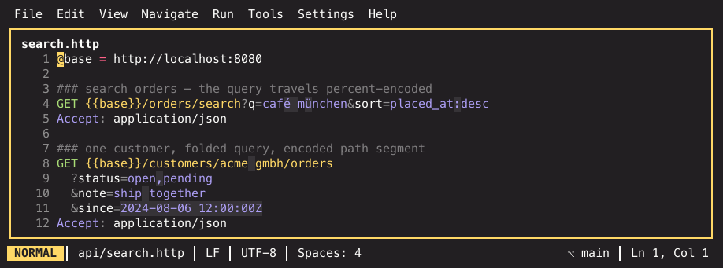
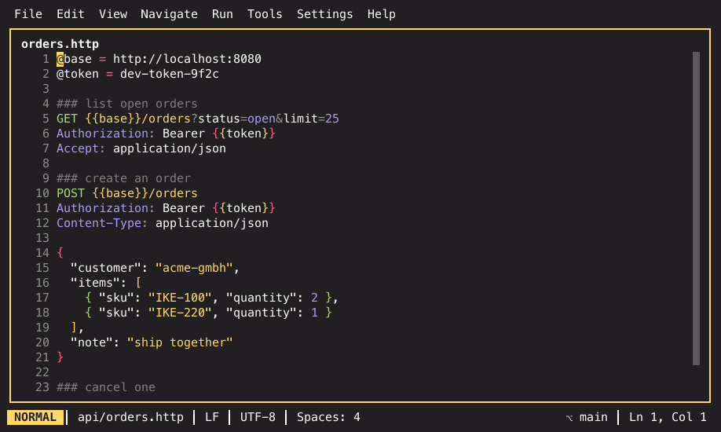

The HTTP client¶
Requests live in plain-text .http files in your repository, next to the code
they call. You run the one under the cursor and read the answer in a pane —
no separate tool, nothing to export, and the file is reviewable in a pull
request like everything else.
The format is the JetBrains / VS Code REST-client one, so existing .http
files work as they are.
A file¶
### list indices
GET https://${HOST}/_cat/indices
? v =
& s = i
### create thing
POST https://${HOST}/things HTTP/1.1
Content-Type: application/json
Authorization: Bearer {{$env TOKEN}}
{"name": "example"}
###separates requests; the text after it names the following one.- The request line is
METHOD target [HTTP-version]; the version defaults toHTTP/1.1. - Headers run until the first empty line, in the order you wrote them.
- The body is everything after that empty line up to the next
###. #and//start a comment outside a body. Inside a body nothing is stripped.
A malformed request does not break the file: the other blocks still parse and still run.
Long query strings¶
A query may be folded onto indented continuation lines starting with ? or
&, as in the example above — that dispatches as
GET https://…/_cat/indices?v=&s=i. Whitespace around ?, & and = is
ignored, several parameters can share a line, and a parameter without =
stays a valueless flag (? pretty).
The editor makes long queries scannable: the URL path, parameter keys and
parameter values each get their own color and ?, &, = render as dimmed
separators — on the request line, on folded query lines and in
application/x-www-form-urlencoded bodies. Percent-encoded characters
display as the character they encode (%20 shows as a space, %C3%A4 as
ä), with a subtle background tint so you can tell a decoded stand-in from
real text. Move the caret into a sequence — or select across it — and
exactly that spot shows the raw encoding, so editing stays exact; the file
itself is never changed.

That is one of several decoding layers that meet in a .http file: epoch
timestamps in query values and bodies, byte sizes and durations in header
values, CIDR prefixes and punycode hosts. All of them, and their settings, are
in Conceal and decoded values.
Placeholders¶
${NAME} and {{$env NAME}} are read from the environment when the
request runs, never from the file. A request with an unresolved variable is
not sent at all — you get a notification naming every variable that is
missing.
{{name}} is a variable of your own. It is filled, in this order, from a
value captured out of a response, from an
@name = value line in the file, from the environment picked with Select
HTTP Environment (a http-client.env.json next to the file), and finally
from the process environment.
@host = https://example.com
### thing
GET {{host}}/my/path
Chaining requests: # @capture¶
Some workflows only make sense as a chain — start an operation, then ask about
the id the answer contained. A # @capture comment on a request stores a
value out of its response under a variable name, and later requests of the
file use it like any other {{name}}:
### start
# @capture task = .task
POST {{host}}/_reindex?wait_for_completion=false
### poll
GET {{host}}/_tasks/{{task}}
Everything right of the = is a jq expression
evaluated against the response body — the same language as the jq playground,
so it is not limited to plain paths:
# @capture id = .items[] | select(.state=="done") | .id
# @capture token = .data.access_token
# @capture where = .task | "\(.node):\(.id)"
A string is captured without its quotes (it is going into a URL or a header),
anything else keeps its JSON spelling. When several values come out, the first
one is taken. A capture beats an @name = line of the same name, which makes
@token = fill-me-in a useful placeholder to keep in the file.
If a capture cannot produce a value — the path matches nothing, the body is not JSON, the expression is broken — the request still completes and its response still shows. The reason appears twice: as a warning row above the response, and as a warning marker on the directive line itself, so it is where you would fix it. Running the request again once it works clears the marker.
Captured values are stored with the response, in .ike/http/, so they are
still there when you reopen the project — and they are gone once that response
falls out of the five kept per request. Re-sending a stored request
(Ctrl+R) captures nothing: it repeats what was sent, it does not re-read
the file.
A body from a file¶
When the whole body is a directive line, the payload comes from disk:
POST https://example.com/upload
Content-Type: application/json
< ./payload.json
< path sends the file verbatim; <@ path substitutes the placeholders
inside the file first. Relative paths resolve against the .http file's own
directory (not your working directory) and ~ expands. The path takes
placeholders too: < ./{{$env FIXTURE}}.json. A missing file fails the
request with a message naming it — an empty body is never sent silently.
Because the directive only counts when it is the whole body, a lone < in
an XML payload keeps its literal meaning.
Multipart bodies, written by hand¶
A multipart/form-data body is written the JetBrains way — boundary in the
Content-Type, --boundary lines between the parts — and a part whose
content is a single < file line embeds that file:
POST https://example.com/import/
& tags = my_tag
Content-Type: multipart/form-data; boundary=bound
--bound
Content-Disposition: form-data; name="import"; filename="import.csv"
< leads.csv
--bound
Content-Disposition: form-data; name="note"
inline text
--bound--
IKE sends the structure with the CRLF line endings multipart servers expect
and appends the closing --bound-- if you leave it off. Part files resolve
like the whole-body directive — relative to the .http file, ~ expands,
placeholders work — and are embedded byte-for-byte, so binary uploads
survive untouched. A missing file fails the request before anything is sent.
In the editor, a request file looks like this — request blocks separated by
###, placeholders highlighted, and the JSON body highlighted as JSON rather
than as text:

Starting from an OpenAPI spec¶
A new service usually ships an OpenAPI document long before anyone writes a
request file for it. Import OpenAPI Spec… (http.importOpenAPI) asks for
an OpenAPI 3.x document — JSON or YAML, Tab completes paths — and writes
the request file for you.
From a path or from a URL¶
The prompt takes a path or an http(s) URL, and the two confirm
differently:
- A path imports right away on Enter.
-
A URL is checked first. Enter fetches it and reports what it found; only a second Enter imports. A URL that names the document (
https://api.example.com/openapi.json) is fetched as it is, while a plain base URL (https://api.example.com) is resolved by probing the well-known locations in this order:/openapi.json·/openapi.yaml·/openapi.yml·/swagger.json·/swagger.yaml·/v3/api-docs·/api-docs·/api/openapi.json·/api/openapi.yamlThe first one that answers with a parseable document wins, and the prompt shows which URL that was before you confirm. A URL with a path prefix that is not a document (
https://api.example.com/api) is probed under that prefix.
If nothing usable is found, the popup turns red and tells you why — the
host is unreachable, the server answered HTTP 404, or the document is not
OpenAPI 3.x. Nothing is written until a document has been verified. Each
request has a five second timeout, and an unreachable host stops the probe run
at the first path instead of waiting nine times over.
The result lands next to the spec — for a URL, in the project directory —
named after it (petstore.yaml → petstore.http,
https://api.example.com/v3/api-docs → api-docs.http), and opens in the
editor. Next to it you get a
http-client.env.json with the host and every parameter value, and a
http-client.private.env.json with the credentials left empty for you to fill
in. Fill those in, pick an environment with Select HTTP Environment, and
the blocks run as they are.
### showPetById
# Info for a specific pet
GET {{host}}/pets/{{petId}}
? status = {{status}}
# & limit = {{limit}}
Accept: application/json
Authorization: Bearer {{bearerAuth}}
What you get:
- One block per operation, grouped by tag, named after the
operationId, with the summary as a comment above it. - Everything variable as a
{{placeholder}}— the host, path and query parameters, headers, credentials. Change a value once, every block follows. - Required query parameters live, optional ones as commented
# & key = …lines you uncomment when you need them. - A JSON body carrying the schema's required fields, with the spec's own examples where it provides them.
- Bearer, basic and apiKey security as variables, never as literals — a generated file holds no secret, and only the private environment file (the one you keep out of version control) has a slot for one.
Existing environment files are never overwritten; if one is already there, the notification names the variables you still have to add.
Anything the importer cannot express — an external $ref, an exotic media
type, a security scheme with no header spelling — is skipped and named: it
appears as a # not generated: … comment at the top of the file and in the
import notification. The rest is still generated. Only a document that is not
OpenAPI 3.x at all is refused, and a Swagger 2.0 file is told to convert
first.
Re-running the import regenerates the same file byte for byte, so updating a
spec produces a clean diff. A .http file the importer did not write is
never overwritten — it stops with an error instead.
Starting from a curl command¶
A request that reaches you as a curl command — the browser devtools' Copy as
cURL, an API doc, a line out of your shell history — becomes a request block
without retyping. Copy the command, then run Import curl Command…
(http.importCurl) with the .http file open: the prompt is already filled
with the command from your clipboard, and Enter appends the block to the
end of the file and puts the cursor on it, ready to run.
curl 'https://api.example.com/v1/things?page=2' \
-X POST \
-H 'accept: application/json' \
-H 'content-type: application/json' \
--data-raw '{"name":"thing"}'
becomes
### POST /v1/things
POST https://api.example.com/v1/things?page=2
accept: application/json
content-type: application/json
{"name":"thing"}
Understood: -X, the URL (and --url), -H, -d / --data* (including
--data-urlencode, and -d @file as a < file body), --json, -F forms
(files, ;type=, ;filename=), -u basic auth, --oauth2-bearer, -A,
-e, -b, --compressed, -G and -I. Anything else — -L, -k, -s,
--retry, an output file, a second URL — is named in the notification
rather than quietly dropped, so you can decide whether it mattered.
Copying a request out as curl¶
The way back is Copy HTTP Request as curl (http.copyAsCurl): put the
cursor in a block and the clipboard gets a runnable curl command for it, with
every {{variable}} already substituted — the same values a real dispatch
would send. Basic auth comes back as -u, a multipart body as -F parts, a
< file body as --data-binary @… with the path made relative to where you
run it.
It carries your secrets
Because the values are substituted, a copied command contains the token or password the request would send. That is what makes it runnable — just take care where you paste it.
If a variable cannot be resolved, nothing is copied and the notification says which one is missing (and which environment you may not have picked yet).
…or as httpie¶
Copy HTTP Request as httpie (http.copyAsHttpie) does the same job in
httpie's syntax, which is a good deal easier to read in
a ticket or a chat message. It is not the curl command with renamed flags:
headers become Name:Value, query parameters param==value, the fields of a
JSON body field=value (or field:=raw for a number, a boolean, a list or a
nested object), basic auth -a user:pass, and a form or multipart body rides
--form. The method is always spelled out.
Where httpie's field syntax cannot carry a body faithfully — a JSON array, a
field name containing a separator, a payload that is not JSON — the body goes
out as --raw instead, which is less pretty but always correct. A < file
body is redirected on stdin, and a binary body is piped in through base64 -d.
Both exports resolve variables the same way, carry the same secrets, and are offered on Alt+Enter where the cursor sits in a request block, as Copy as curl and Copy as httpie.
Running one¶
Put the cursor anywhere in a request block and press Cmd+Enter (Ctrl+F9 where your terminal will not deliver that), or run Run HTTP Request from the Run menu or the palette.
While a request is in flight the status line shows it
(⟳ http: GET /_cat/indices (1.2s)), and the response pane header counts the
elapsed time up (⟳ running one (1.2s)). Running the same request again
while it is still going is refused rather than fired twice.
To stop one, press Cmd+. (Ctrl+. where your terminal will
not deliver that) — it works both in the .http editor and in the response
pane — or x inside the response pane, or run Cancel Running HTTP
Request from the palette. Once a request has been out for more than a
second the pane spells this out for you with a x / ctrl+. cancels line
under its header.
Configuration IKE picks up¶
Before sending, IKE reads two files you probably already have. Anything the
.http file states explicitly always wins.
| File | What is used |
|---|---|
.netrc ($NETRC, else ~/.netrc) |
Machine-matched credentials become basic auth — only when the request sets no Authorization header |
.curlrc ($CURL_HOME, $XDG_CONFIG_HOME/curlrc, ~/.curlrc) |
header, user-agent, referer, user, proxy, insecure, location, max-time, connect-timeout |
Unsupported .curlrc options are reported as warnings on the response, never
as errors. Defaults otherwise: redirects followed, TLS verified, a 30 s
timeout, and bodies capped at 10 MiB with a truncation warning so a huge
download cannot freeze the UI.
GraphQL requests¶
A GraphQL call is a POST of one JSON envelope, which means escaping a
multi-line query into a JSON string by hand. Write GRAPHQL as the method
instead and IKE builds the envelope for you: the body is the query as you write
it, and an optional JSON variables object follows it after a blank line.
### hero
GRAPHQL https://example.com/graphql
Authorization: Bearer {{token}}
query Hero($episode: Episode) {
hero(episode: $episode) {
name
}
}
{
"episode": "EMPIRE"
}
Running that sends
{"query":"query Hero($episode: Episode) {\n hero(episode: $episode) {\n name\n }\n}","variables":{"episode":"EMPIRE"},"operationName":"Hero"}
as a POST with Content-Type: application/json. The operation name is picked
up from the first named operation, so a document with several operations still
selects the right one; an anonymous { … } query sends no name at all.
Everything else about the block is an ordinary request: headers, {{variables}},
# @capture directives and ### naming all work as usual, and so do
Copy as curl and Copy as httpie — they export the POST that actually
goes out.
The variables object is the last blank-line separated { … } block, so a query
may hold blank lines of its own without being cut in half. Variables that are
not valid JSON stop the request with a message instead of being sent.
Sending the query without an envelope
Set Content-Type: application/graphql and the body is the raw query text
— that media type carries the query itself. Variables then have nowhere to
travel, and the response pane says so rather than dropping them silently.
Subscriptions are not supported: they are a WebSocket protocol rather than a
POST.
When the answer is an error¶
GraphQL servers answer a broken query with HTTP 200 and an errors array
in the body, which makes a failure look like a success at a glance. IKE lifts
those messages out:
- the status row says how many (
HTTP/1.1 200 OK (12ms) ✗ 2 errors) and turns the failure colour; - a red block above the body lists each message with the response path and the
line:columnin your query, when the server sends them; - the run counts as failed for the "response landed while you were looking elsewhere" notification.
The data part still pretty-prints as JSON underneath, so a partial answer
stays readable next to the errors that came with it.
Completing fields and arguments¶
The server knows every field, argument and type — ask it once and IKE
completes them for you. With the caret in a GRAPHQL block, run
Introspect GraphQL Schema (http.graphqlIntrospect) from the command
palette. It sends the introspection query to that block's URL, with that
block's headers (so an endpoint behind a login answers), and caches the schema
per host under .ike/graphql/ in your project.
From then on, inside the query section:
- typing in a selection set offers the fields of the type you are in, with each field's own type in the detail column (and a marker on deprecated ones);
- typing inside a field's
(offers its arguments, inserting the:for you; - typing after the
:of aquery Foo($x: …)variable definition, or after... on, offers the schema's types.
Nothing is sent while you type — completion reads the cache only. {{variables}}
still complete inside a query, so a {{token}} in an argument behaves as it
does anywhere else.
Open Cached GraphQL Schema (SDL) (http.graphqlSchema) opens the cached
schema as a readable .graphql scratch file — the whole type system, for the
questions a popup cannot answer. Re-run the introspection whenever the API
changes.
One schema per host
If your request URL is a variable (GRAPHQL {{host}}/graphql) IKE cannot
tell which endpoint you mean — so when the project has exactly one cached
schema, that one is used. With two or more, introspect from a block whose
URL is spelled out, or resolve the variable first.
WebSocket sessions¶
A ws:// or wss:// endpoint is a conversation, not a request. Write
WEBSOCKET as the method and the body becomes the messages that open it,
separated by === lines:
### chat
WEBSOCKET wss://example.com/socket
Sec-WebSocket-Protocol: chat
{"join": "lobby"}
=== wait-for-server
{"say": "hello"}
Running it connects, sends the messages in order — === wait-for-server
pauses until the server has said something before the next message goes out —
and streams every frame into the response pane live, one row per frame:
→ for what you sent, ← for what arrived, each with a timestamp. Text
frames show verbatim; binary frames show as (binary N bytes) plus hex.
Variables and the selected environment resolve in the URL and in every
message exactly as for an HTTP request.
While the session is open, the pane header shows ⟳ websocket session… and
you can talk back: press Enter (or i) to open the input line, type,
Enter sends — the line stays open for the next message — and Up /
Down step through what you already sent. Esc closes the input, x
(or Cancel Running HTTP Request) closes the session.
The finished transcript is stored as the response body under the 101
status, so history browsing, Show HTTP Response and the D/P diffs
work on sessions like on any response. Ctrl+R re-send opens the session
again and replays the same initial messages; R re-runs the block with
today's variables.
Completion while you type¶
.http files complete without any language server:
- methods on the first token of a request line,
HTTP/1.1once a target is there; - header names — inserting the
:for you — and, for headers with a small closed set of values, those values: MIME types forContent-Type/Accept, schemes forAuthorization, directives forCache-Control, and so on; - file paths after
<(and<@) on a body-file directive line — whole-body or inside a multipart part — relative to the.httpfile; accepting a directory and completing again descends into it; - variable names right after an unclosed
{{— in the request line, a header value or a body — from your file's own@name=valuedefinitions and the active environment's variables (whicheverhttp-client.env.jsonenvironment you selected, or its only one); accepting closes the braces for you; - GraphQL fields, arguments and types inside a
GRAPHQLblock's query, once the endpoint's schema is cached — see GraphQL requests; - nothing else inside bodies, comments or
###lines — deliberately, so a JSON body does not offer you every word in the file.
Matching is a case-insensitive subsequence, not a prefix: Cen reaches
Content-Encoding, ctype reaches Content-Type, jso reaches
application/json.
Bodies are their own language¶
A body is highlighted — and indented — as whatever its Content-Type says it
is. application/json makes the body JSON, text/xml makes it XML, and
pressing enter after a { in a JSON body indents like JSON while the request
and header lines above keep their own rules. Parameters (; charset=utf-8),
x- prefixes and +json/+xml suffixes are handled, so
application/vnd.api+json is JSON, and application/graphql highlights as
GraphQL when your build links that language. A GRAPHQL block is a special
case: its query is highlighted as GraphQL and its variables object as JSON,
without needing a Content-Type at all.
A media type that maps to no language keeps plain styling rather than a guess
— with two exceptions that get their own treatment instead of a language's:
an application/x-www-form-urlencoded body gets the same key/value
highlighting as a request URL's query string, and a multipart/form-data
body gets its --boundary lines and each part's own header block (but not a
part's body — it could be text, JSON, or a file's raw bytes) styled.
Bodies fold by their own structure too: zc on a JSON object or array line
collapses it behind a placeholder with the hidden-line count, zo reopens it,
zM/zR close and open everything — the same keys as anywhere else in the
editor. A whole request folds as well: zc on a ### line collapses that
request up to the next separator, so a long file reads as a list of its
requests.
Highlighting needs the grammar
A body only highlights when the matching grammar is in your build — a
CGO_ENABLED=0 build has none. When the content type is recognised but
the grammar is missing, the viewer says so above the body instead of
quietly showing plain text.
The response pane¶
The first response opens a read-only pane split off the editor (below, or to
the right of a wide landscape pane), and every later
response reuses it. It shows the request line actually sent (method +
final URL, right under the pane title), then the status line and duration,
the timing breakdown of the exchange directly beneath it
(dns 2ms · connect 11ms · tls 34ms · ttfb 210ms · transfer 4ms — only the
phases that happened, and conn reused when the connection was already
open), the headers, any warnings, and the body — JSON pretty-printed, JSON/XML/HTML/CSS/JS
highlighted, binary bodies collapsed to a notice.
| Key | What it does |
|---|---|
j / k, wheel |
Scroll |
g / G |
Top / bottom (g also resets the horizontal offset) |
| Shift+Left / Shift+Right | Pan sideways by 8 columns (also shift+wheel) |
0 / ^ |
Back to column 0 |
$ |
Jump to the right edge |
/, Ctrl+F / Cmd+F |
Search the whole view — status line, headers and body |
n / N |
Next / previous match, wrapping |
y, Ctrl+C / Cmd+C |
Copy the selection, or the whole body when there is none |
Y |
Copy the status line plus headers |
h / l, Left / Right |
Older / newer response for this request |
| Ctrl+R | Send this response's request again, unchanged |
R |
Re-run this request from its .http file, with today's variables |
C |
Copy this response's request as a curl command |
H |
Copy this response's request as an httpie command |
S |
Save the raw response body to a file |
i |
Expand/collapse the request line into its headers and (small) body |
U |
Copy the request line's full, untruncated URL |
t |
Switch between the pretty-printed and the raw body |
q |
Open the jq playground on this body |
| Cmd+Shift+J / Ctrl+Shift+J | Open the playground this body's type speaks — jq, yq or xmq |
m |
Load the next chunk of a large body |
o |
Open the whole body as a file |
x |
Cancel the request that is running (or close the websocket session) |
Enter / i (websocket session) |
Open the input line, then send with Enter; Up / Down recall sent messages |
za / zc / zo |
Toggle / close / open the fold at the top of the view |
zM / zR |
Collapse every fold / open them all |
| Esc | Clear the search |
Search uses the editor's smartcase rule: an all-lowercase pattern ignores
case, any uppercase letter makes it exact. The footer shows the position
(/token 3/17).
The request line¶
Right under the status line, the pane shows exactly what went out: the
method and the final URL, after placeholder substitution. This is what
makes an edited-and-re-run request, or an older history entry, honest about
which path and query parameters were really used — the status line alone
never told you that. A URL longer than the pane is shortened in the
middle, not at the end, so both the host and the tail of the query stay
readable (https://api.example.test/…&filter=active instead of losing the
query behind a trailing …). U copies the full URL regardless of how much
of it is showing.
i expands the line into the as-sent request headers and, for a body under
2 KiB, the body itself — collapsed by default, since the method and URL
already answer the common question. A response stored before this feature
existed carries no request snapshot, so its pane shows no request line; only
ctrl+r re-send is affected the same way (see below).
Pretty or raw¶
A JSON body arrives minified far more often than not, so the pane indents it
before showing it — that is also what gives folding something to fold. t
(or Toggle Raw / Pretty HTTP Response Body) switches to the bytes exactly
as they arrived and back, for when the formatting itself is the question: a
payload where whitespace matters, or an answer that is not quite valid JSON.
Highlighting stays on either way. The choice sticks while you browse history,
so you are not re-pressing it for every response.
Very large bodies are shown raw and unhighlighted past 2 MiB, with a note saying so. Indenting, highlighting and scanning for folds all take time proportional to the body, and a pane that freezes for a second on arrival is worse than a plain one.
A JSON, XML or HTML body folds like a file in the editor does: foldable
lines carry a ▾ marker in the left column, clicking it collapses the block to a
⋯ N lines placeholder, and clicking the ▸ opens it again. The keyboard
commands act on the fold at the top of the view, since the viewer has no
cursor; zM and zR fold and unfold everything. Folding is display-only —
searching still finds text inside a collapsed block (and opens it to show you
the hit), and copying takes the real content, never the placeholder.
Selection works with the mouse like the terminal pane does — drag to select, double click for a word (ids and dotted tokens select whole), triple click for a line. What gets copied is what you see, so a pretty-printed JSON body pastes as it reads. Copy HTTP Response Body and Copy HTTP Response Headers do the same from the palette.
The copy chord always works, whatever else the pane is in the middle of: with
the search prompt open, after a z that is waiting for its fold key, and —
over a live selection — instead of Ctrl+C's usual "quit IKE". y is the
exception, because inside the search prompt it is just a letter you typed.
Very large responses¶
A body over 1 MiB is written to a file on disk while it arrives, and the pane shows the first megabyte of it instead of holding the whole thing in memory. A note above the body says where you are:
(showing the first 1.0 MiB of 7.3 MiB — m load more · o open as file)
m(Load More of the HTTP Response Body) pulls in the next megabyte. Press it again for the one after that; the note disappears once the whole body is on screen.o(Open Full HTTP Response Body as File) opens the complete body as a normal editor tab, where search, folding and everything else work as usual.
q (below) and S always work on the whole body, never on the part you
happen to be looking at. Responses are still capped at 10 MiB on receipt, with
a warning when one is cut there.
Into the jq playground¶
q (or Open jq Playground on HTTP Response) opens the jq playground right
in the response pane, with this body as its input — no copying it out first.
The query line appears at the top of the pane and the body below is replaced
by the live result until you press Esc. For a large, partly spooled
response the playground still gets the whole body.
Cmd+Shift+J (Ctrl+Shift+J off macOS, or Open Playground for This File) is the same thing for the other body types: it looks at the response's content type and opens the playground that speaks it — jq for JSON, yq for YAML, xmq for XML and HTML — over this body, in this pane. A body no playground speaks (plain text, binary, an empty response) is answered with a short "no playground …" notice and nothing opens. The chord works the same way on the file in an editor, so it is one key for "query what I am looking at".
Copying the shown request as curl¶
C in the pane (or Copy Shown HTTP Request as curl, http.copyShownAsCurl)
exports the request behind the response you are looking at — the stored
snapshot, with the values that actually went out. It is the response-side
pendant of Copy HTTP Request as curl, which exports the block under the
cursor: use this one when the file has changed since, when the response came
from a re-send, or when you are browsing an older entry. Headers and body are
shell-quoted, an Authorization: Basic header becomes -u, and a binary body
is piped in through base64 -d so the command stays runnable. Nothing is
masked — a token that went out is a token in the exported command.
H (or Copy Shown HTTP Request as httpie, http.copyShownAsHttpie) is the
same export in httpie's syntax — the format described under
Copying a request out as curl, over the same stored snapshot.
Saving the body to a file¶
S in the pane (or Save HTTP Response Body to File…, http.saveResponse)
writes the raw body — the bytes as they arrived, not the pretty-printed
view — to a path you type. The prompt proposes a name built from the request
URL and the Content-Type (/things/42 + application/json → 42.json),
Tab completes paths, a relative path is resolved against the project root,
and a directory receives the proposed name. A large body is streamed from its
spool file, so saving a 9 MiB download costs no memory. Binary bodies (an
image, a PDF, a zip) save correctly; that is what the command is for, since they have no text
to copy. The notification names the file and its size, and says so when the
body had been truncated on receipt.
History¶
The last 5 responses per request are kept in the project under
.ike/http/, keyed by file plus request name, so every request in a
multi-request file has its own history. h/l or Left/Right walk it;
the footer shows where you are (←/→ history 2/5) and when the response was
stored. While an older entry is shown, the pane header also carries a
⧗ history 2/5 (15:04:05) marker so you can't mistake it for the latest
response.
Browse HTTP Response History in the palette focuses the viewer and reports
how many are stored.
Another request's responses¶
The viewer shows one request at a time, but the stored responses of the others
are a keypress away: press R in the focused pane and pick from the requests
of the same .http file that have stored responses — the list shows the
request line, how many responses are stored and when the newest arrived.
Choosing one loads that request's history into the pane, newest first, with
Left/Right browsing as usual. Requests you never dispatched are not
listed; a file without any stored response says so instead of opening an empty
list. The same works from the editor with Show Stored HTTP Response
(http.showResponse), which loads the history of the request block under the
cursor without sending anything — handy right after a restart, before the pane
shows anything at all.
Text bodies are stored as plain text inside the JSON, so .ike/http/*.json
opens and diffs readably in the editor.
Comparing two responses¶
Stepping back and forth between two responses only gets you so far — to see
what changed, press Shift+D in the focused response pane (or run
Compare Stored HTTP Responses, http.diffResponses). A list of the
request's other stored responses opens; pick one and the two open side by side
in the normal diff viewer, the older response on the left. Each column is
labelled with the request, its position in the history and the time it was
stored.
Both sides are rendered the same way: status line, headers, then the body — so a header that changed shows up next to the payload that did. JSON bodies are normalized first: keys are sorted and the indentation is unified, so a response whose keys come back in a different order, or minified where the previous run was pretty-printed, diffs as no change at all and only real differences remain. Line-delimited JSON (NDJSON) is normalized the same way; everything else — XML, HTML, plain text — is compared exactly as it arrived, and a binary body is summarized by its size instead of being compared byte by byte.
The hint D diff appears in the footer as soon as a second response is
stored; with only one there is nothing to compare it with, and the pane says so
rather than opening an empty list.
Sending the same request again¶
Every stored response also keeps the request as it was sent — method,
final URL, headers and body, after placeholders were substituted and after
.netrc/.curlrc had their say. Ctrl+R in the response pane, or a click
on the ⟳ re-send button in its header, sends exactly that again: the .http
file is not read, nothing is substituted a second time, so editing the file,
changing a variable or switching environments in between cannot alter what
goes out. The answer lands in the pane and in the history like any other
response. A re-sent streaming endpoint (SSE/NDJSON) opens the stream again and
renders live, exactly as the first time.
The button only appears when a stored request exists. Responses stored before
IKE started capturing requests still open and browse normally; re-send simply
says there is nothing stored for them — run the request from the .http file
once and the entry after that is re-sendable.
What lands on disk
The stored request holds the substituted values, so a token that
reached the server also sits in .ike/http/, next to the response bodies
that were already kept there. Keep that directory out of version control
(and out of backups) if your requests carry secrets.
Re-running and comparing with the previous run¶
Ctrl+R repeats the stored bytes; R re-runs the request instead — the
block is read from the .http file again (from the open buffer, so unsaved
edits count) and its placeholders are resolved against the variables and the
environment selected now. That is the one to reach for when the question is
"does this endpoint still answer the same today?" rather than "what did that
exact exchange do?". The answer lands in the pane and in the history like any
other response. If the request block was renamed or deleted since, IKE says so
and points at Ctrl+R, which still works.
The comparison follows by itself: after a re-run (or a re-send) the
previous-vs-new diff opens in the diff viewer, previous run on the left. A
first run has nothing to compare with and opens nothing. Turn it off with
Diff after re-run (http.diff_after_rerun) on the HTTP Client
settings page — P in the response pane still opens the same diff whenever
you want it.
Response diffs leave the volatile headers out, because Date, a freshly
stamped X-Request-Id and a few timing headers differ on every single run and
would bury the header that actually changed. Volatile diff headers
(http.diff_ignore_headers) is that list: header names, matched
case-insensitively, with a trailing * for a whole family (x-amz-*). The
notice above the diff says how many headers were filtered, so nothing goes
missing quietly.
Commands¶
| Command | Id | Default chord |
|---|---|---|
| Run HTTP Request | http.run |
Cmd+Enter, Ctrl+F9 |
| Cancel Running HTTP Request | http.cancel |
— |
| Import OpenAPI Spec… | http.importOpenAPI |
— |
| Import curl Command… | http.importCurl |
— |
| Copy HTTP Request as curl | http.copyAsCurl |
— |
| Copy HTTP Request as httpie | http.copyAsHttpie |
— |
| Select HTTP Environment | http.selectEnvironment |
— |
| Copy HTTP Response Body | http.copyBody |
— |
| Copy HTTP Response Headers | http.copyHeaders |
— |
| Copy Shown HTTP Request as curl | http.copyShownAsCurl |
— |
| Copy Shown HTTP Request as httpie | http.copyShownAsHttpie |
— |
| Save HTTP Response Body to File… | http.saveResponse |
— |
| Toggle Raw / Pretty HTTP Response Body | http.toggleRawBody |
— |
| Open jq Playground on HTTP Response | http.jqPlayground |
— |
| Open Playground for This File | playground.open |
Cmd+Shift+J / Ctrl+Shift+J |
| Load More of the HTTP Response Body | http.loadMoreBody |
— |
| Open Full HTTP Response Body as File | http.openBodyFile |
— |
| Browse HTTP Response History | http.responseHistory |
— |
| Show Stored HTTP Response | http.showResponse |
— |
| Re-send Stored HTTP Request | http.resend |
Ctrl+R (response pane) |
| Re-run HTTP Request from History | http.rerun |
— |
| Compare Stored HTTP Responses | http.diffResponses |
— |
| Introspect GraphQL Schema | http.graphqlIntrospect |
— |
| Open Cached GraphQL Schema (SDL) | http.graphqlSchema |
— |
A scratch file is a quick way to try something without adding a file to the
repository: New Scratch File: Http (scratch.new.http).
Related¶
- Conceal and decoded values — percent-decoding and the other
stand-ins a
.httpfile draws - Scratch files and snippets — throwaway
.httpbuffers - Keybindings reference — every default binding
- Commands reference — every command id